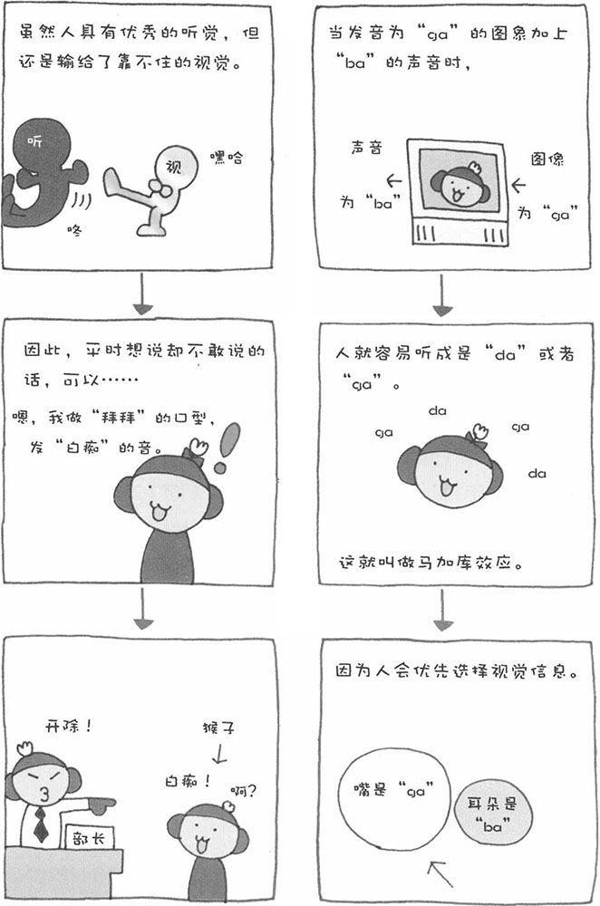

■ 受视觉影响的听觉/马加库效应
当电视上播放发音为"ga"的图象时，如果同时在外界加上一个"ba"的声音，那么我们就会听成一个新的音——"da"或者"ga"。当耳朵和眼睛收集到相互矛盾的信息时，人会优先选择视觉收集到的信息。这一现象是英国心理学家马加库通过实验发现的。
■ 无限音阶/谢帕德音阶
不知您是否看过这样一幅画，画中的阶梯看起来无限循环。在声音领域，也有一种无限音阶。1、2、3、4、5、6（音乐简谱）……逐渐升高的音阶无限延续（升高），听起来并不会产生不和谐的感觉。无限音阶是由谢帕德发明的，因而也被称为"谢帕德音阶"。
有兴趣的朋友可以在网上搜索"无限音阶"，下载下来听一听。
■ 味道的对比效果
如果在西瓜上撒少量的食盐，吃起来会更甜。这是因为咸味可以更加突出西瓜甜味缘故。这就是所谓的味道的对比效果。此外，咸味还有抑制作用。如果在苦瓜上加些食盐，可以抑制苦瓜的苦味。在略带苦味和酸味的青桔上加些食盐，也可以抑制苦味，突出甜味。
■ 感知辣味的部位并不在舌头上
很多人认为，和甜昧、苦味一样，辣味也是通过舌头感觉到的。实际上，舌头上并没有感知辣味的部分。其实，辣味的本质是痛。当含有辣味的食物和苦味等味道混合在一起时，我们会感觉到痛，并把这种痛的感觉命名为"辣味"。
